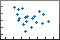

scatter
Scatter plot
- 
Syntax
Description
Vector and Matrix Data
scatter(___, fills in the
circles. Use the "filled")"filled" option with any of the input
argument combinations in the previous syntaxes.
Table Data
scatter(
plots the variables tbl,xvar,yvar)xvar and yvar from the
table tbl. To plot one data set, specify one variable for
xvar and one variable for yvar. To
plot multiple data sets, specify multiple variables for xvar,
yvar, or both. If both arguments specify multiple
variables, they must specify the same number of variables. (Since
R2021b)
Additional Options
scatter( plots
into the axes specified by ax,___)ax instead of into the current
axes. The option ax can precede any of the input argument
combinations in the previous syntaxes.
scatter(___,
modifies the scatter plot using one or more name-value arguments to set
properties. For example:Name,Value)
scatter(x,y,"LineWidth",2)creates a scatter plot with 2-point marker outlines.scatter(tbl,"MyX","MyY","ColorVariable","MyColors")creates a scatter plot from data in a table, and customizes the marker colors using data from the table.
For a full list of properties, see Scatter Properties.
s = scatter(___)Scatter object or an array of
Scatter objects. Use s to set
properties after creating the plot. For a full list of properties, see Scatter Properties.
Examples
Create x as 200 equally spaced values between 0 and . Create y as cosine values with random noise. Then, create a scatter plot.
x = linspace(0,3*pi,200); y = cos(x) + rand(1,200); scatter(x,y)

Create a scatter plot using circles with different sizes. Specify the size in points squared
x = linspace(0,3*pi,200); y = cos(x) + rand(1,200); sz = linspace(1,100,200); scatter(x,y,sz)

Corresponding elements in x, y, and sz determine the location and size of each circle. To plot all circles with the equal area, specify sz as a numeric scalar.
Create a scatter plot and vary the circle color.
x = linspace(0,3*pi,200); y = cos(x) + rand(1,200); c = linspace(1,10,length(x)); scatter(x,y,[],c)

Corresponding elements in x, y, and c determine the location and color of each circle. The scatter function maps the elements in c to colors in the current colormap.
Since R2023b
Named color palettes provide a convenient way to change the colors of a chart. This example compares a scatter plot with three different color palettes.
Create a scatter plot of random numbers using the default palette.
x = rand(50,5);
y = randn(50,5) + (5:5:25);
scatter(x,y,"filled")
Change the color palette to reef by using colororder function.
colororder("reef")
Change the color palette to meadow.
colororder("meadow")
Create a scatter plot and fill in the markers. scatter fills each marker using the color of the marker edge.
x = linspace(0,3*pi,200);
y = cos(x) + rand(1,200);
sz = 25;
c = linspace(1,10,length(x));
scatter(x,y,sz,c,'filled')
Create vectors x and y as sine and cosine values with random noise. Then, create a scatter plot and use diamond markers with an area of 140 points squared.
theta = linspace(0,2*pi,150);
x = sin(theta) + 0.75*rand(1,150);
y = cos(theta) + 0.75*rand(1,150);
sz = 140;
scatter(x,y,sz,'d')
Create vectors x and y as sine and cosine values with random noise. Create a scatter plot and set the marker edge color, marker face color, and line width.
theta = linspace(0,2*pi,300); x = sin(theta) + 0.75*rand(1,300); y = cos(theta) + 0.75*rand(1,300); sz = 40; scatter(x,y,sz,'MarkerEdgeColor',[0 .5 .5],... 'MarkerFaceColor',[0 .7 .7],... 'LineWidth',1.5)

You can vary the transparency of scattered points by setting the AlphaData property to a vector of different opacity values. To ensure the scatter plot uses the AlphaData values, set the MarkerFaceAlpha property to 'flat'.
Create a set of normally distributed random numbers. Then create a scatter plot of the data with filled markers.
x = randn(1000,1);
y = randn(1000,1);
s = scatter(x,y,'filled');
Set the opacity of each point according to its distance from zero.
distfromzero = sqrt(x.^2 + y.^2);
s.AlphaData = distfromzero;
s.MarkerFaceAlpha = 'flat';
Since R2021b
A convenient way to plot data from a table is to pass the table to the scatter function and specify the variables you want to plot. For example, read patients.xls as a table tbl. Plot the relationship between the Systolic and Diastolic variables by passing tbl as the first argument to the scatter function followed by the variable names. Notice that the axis labels match the variable names.
tbl = readtable('patients.xls'); scatter(tbl,'Systolic','Diastolic');

You can also plot multiple variables at the same time. For example, plot both blood pressure variables versus the Weight variable by specifying the yvar argument as the cell array {'Systolic','Diastolic'}. Add a legend, and notice that the legend labels match the variable names.
scatter(tbl,'Weight',{'Systolic','Diastolic'}); legend

Since R2021b
One way to plot data from a table and customize the colors and marker sizes is to set the ColorVariable and SizeData properties. You can set these properties as name-value arguments when you call the scatter function, or you can set them on the Scatter object later.
For example, read patients.xls as a table tbl. Plot the Height variable versus the Weight variable with filled markers. Vary the marker colors by specifying the ColorVariable name-value argument. Return the Scatter object as s, so you can set other properties later.
tbl = readtable('patients.xls'); s = scatter(tbl,'Weight','Height','filled','ColorVariable','Diastolic');

Change the marker sizes to 100 points by setting the SizeData property. Then add a colorbar.
s.SizeData = 100; colorbar

You can display a tiling of plots using the tiledlayout and nexttile functions. Call the tiledlayout function to create a 2-by-1 tiled chart layout. Call the nexttile function to create the axes objects ax1 and ax2. Plot scattered data into each axes. In the bottom scatter plot, specify diamond filled diamond markers.
x = linspace(0,3*pi,200); y = cos(x) + rand(1,200); tiledlayout(2,1) % Top plot ax1 = nexttile; scatter(ax1,x,y) % Bottom plot ax2 = nexttile; scatter(ax2,x,y,'filled','d')

Create a scatter plot and return the scatter series object, s.
theta = linspace(0,1,500); x = exp(theta).*sin(100*theta); y = exp(theta).*cos(100*theta); s = scatter(x,y);

Use s to query and set properties of the scatter series after it has been created. Set the line width to 0.6 point. Set the marker edge color to blue. Set the marker face color using an RGB triplet color.
s.LineWidth = 0.6;
s.MarkerEdgeColor = 'b';
s.MarkerFaceColor = [0 0.5 0.5];
Input Arguments
x-coordinates, specified as a scalar, vector, or
matrix. The size and shape of x depends on the shape of
your data. This table describes the most common situations.
| Type of Plot | How to Specify Coordinates |
|---|---|
| Single point | Specify scatter(1,2) |
| One set of points | Specify scatter([1 2 3],[4; 5; 6]) |
| Multiple sets of points that are different colors | If all the sets share the same x- or y-coordinates, specify the shared coordinates as a vector and the other coordinates as a matrix. The length of the vector must match one of the dimensions of the matrix. For example: scatter([1 2 3],[4 5 6; 7 8 9]) scatter
plots a separate set of points for each column in
the matrix.Alternatively, specify
scatter([1 3 5; 2 4 6],[10 25 45; 20 40 60]) |
Data Types: single | double | int8 | int16 | int32 | int64 | uint8 | uint16 | uint32 | uint64 | categorical | datetime | duration
y-coordinates, specified as a scalar, vector, or
matrix. The size and shape of y depends on the shape of
your data. This table describes the most common situations.
| Type of Plot | How to Specify Coordinates |
|---|---|
| Single point | Specify scatter(1,2) |
| One set of points | Specify scatter([1 2 3],[4; 5; 6]) |
| Multiple sets of points that are different colors | If all the sets share the same x- or y-coordinates, specify the shared coordinates as a vector and the other coordinates as a matrix. The length of the vector must match one of the dimensions of the matrix. For example: scatter([1 2 3],[4 5 6; 7 8 9]) scatter
plots a separate set of points for each column in
the matrix.Alternatively, specify
scatter([1 3 5; 2 4 6],[10 25 45; 20 40 60]) |
Data Types: single | double | int8 | int16 | int32 | int64 | uint8 | uint16 | uint32 | uint64 | categorical | datetime | duration
Marker size, specified as a numeric scalar, vector, matrix, or empty array
([]). The size controls the area of each marker in
points squared. An empty array specifies the default size of 36 points. The
way you specify the size depends on how you specify x and
y, and how you want the plot to look. This table
describes the most common situations.
| Desired Marker Sizes | x and y
| sz | Example |
|---|---|---|---|
Same size for all points | Any valid combination of vectors or matrices
described for | Scalar | Specify x = [1 2 3 4]; y = [1 6; 3 8; 2 7; 4 9]; scatter(x,y,100) |
Different size for each point | Vectors of the same length |
| Specify x = [1 2 3 4]; y = [1 3 2 4]; sz = [80 150 700 50]; scatter(x,y,sz) Specify
x = [1 2 3 4]; y = [1 3 2 4]; sz = [80 30; 150 900; 50 2000; 200 350]; scatter(x,y,sz) |
Different size for each point | At least one of |
| Specify x = [1 2 3 4]; y = [1 6; 3 8; 2 7; 4 9]; sz = [80 150 50 700]; scatter(x,y,sz) Specify
x = [1 2 3 4]; y = [1 6; 3 8; 2 7; 4 9]; sz = [80 30; 150 900; 50 2000; 200 350]; scatter(x,y,sz) |
Data Types: single | double | int8 | int16 | int32 | int64 | uint8 | uint16 | uint32 | uint64
Marker color, specified as a color name, RGB triplet, matrix of RGB triplets, or a vector of colormap indices.
Color name — A color name such as
"red", or a short name such as"r".RGB triplet — A three-element row vector whose elements specify the intensities of the red, green, and blue components of the color. The intensities must be in the range
[0,1]; for example,[0.4 0.6 0.7]. RGB triplets are useful for creating custom colors.Matrix of RGB triplets — A three-column matrix in which each row is an RGB triplet.
Vector of colormap indices — A vector of numeric values that is the same length as the
xandyvectors.
The way you specify the color depends on the desired color scheme and whether you are plotting one set of coordinates or multiple sets of coordinates. This table describes the most common situations.
| Color Scheme | How to Specify the Color | Example |
|---|---|---|
Use one color for all the points. | Specify a color name or a short name from the table below, or specify one RGB triplet. | Plot one set of points, and specify the color
as scatter(1:4,[2 5 3 7],[],"red")Plot two sets of points, and specify the color as red using an RGB triplet. scatter(1:4,[2 5; 1 2; 8 4; 11 9],[],[1 0 0]) |
Assign different colors to each point using a colormap. | Specify a row or column vector of numbers. The numbers map into the current colormap array. The smallest value maps to the first row in the colormap, and the largest value maps to the last row. The intermediate values map linearly to the intermediate rows. If your plot has three points, specify a column vector to ensure the values are interpreted as colormap indices. You can use this method only
when | Create a vector c = 1:4;
scatter(1:4,[2 5 3 7],[],c)
colormap(gca,"winter") |
Create a custom color for each point. | Specify an m-by-3 matrix of RGB triplets, where m is the number of points in the plot. You can use this method only when
| Create a matrix c = [0 1 0; 1 0 0; 0.5 0.5 0.5; 0.6 0 1]; scatter(1:4,[2 5 3 7],[],c) |
Create a different color for each data set. | Specify an n-by-3 matrix of RGB triplets, where n is the number of data sets. You can
use this method only when at least one of
| Create a matrix c = [1 0 0; 0.6 0 1]; s = scatter(1:4,[2 5; 1 2; 8 4; 11 9],[],c) |
Color Names and RGB Triplets for Common Colors
| Color Name | Short Name | RGB Triplet | Hexadecimal Color Code | Appearance |
|---|---|---|---|---|
"red" | "r" | [1 0 0] | "#FF0000" |
|
"green" | "g" | [0 1 0] | "#00FF00" |
|
"blue" | "b" | [0 0 1] | "#0000FF" |
|
"cyan"
| "c" | [0 1 1] | "#00FFFF" |
|
"magenta" | "m" | [1 0 1] | "#FF00FF" |
|
"yellow" | "y" | [1 1 0] | "#FFFF00" |
|
"black" | "k" | [0 0 0] | "#000000" |
|
"white" | "w" | [1 1 1] | "#FFFFFF" |
|
This table lists the default color palettes for plots in the light and dark themes.
| Palette | Palette Colors |
|---|---|
Before R2025a: Most plots use these colors by default. |
|
|
|
You can get the RGB triplets and hexadecimal color codes for these palettes using the orderedcolors and rgb2hex functions. For example, get the RGB triplets for the "gem" palette and convert them to hexadecimal color codes.
RGB = orderedcolors("gem");
H = rgb2hex(RGB);Before R2023b: Get the RGB triplets using RGB =
get(groot,"FactoryAxesColorOrder").
Before R2024a: Get the hexadecimal color codes using H =
compose("#%02X%02X%02X",round(RGB*255)).
Marker symbol, specified as one of the values listed in this table.
| Marker | Description | Resulting Marker |
|---|---|---|
"o" | Circle |
|
"+" | Plus sign |
|
"*" | Asterisk |
|
"." | Point |
|
"x" | Cross |
|
"_" | Horizontal line |
|
"|" | Vertical line |
|
"square" | Square |
|
"diamond" | Diamond |
|
"^" | Upward-pointing triangle |
|
"v" | Downward-pointing triangle |
|
">" | Right-pointing triangle |
|
"<" | Left-pointing triangle |
|
"pentagram" | Pentagram |
|
"hexagram" | Hexagram |
|
Option to fill the interior of the markers, specified as
"filled". Use this option with markers that have a
face, for example, "o" or "square".
Markers that do not have a face and contain only edges do not draw
("+", "*", ".",
and "x").
The "filled" option sets the
MarkerFaceColor property of the Scatter object to "flat" and
the MarkerEdgeColor property to
"none", so the marker faces draw, but the edges do
not.
Source table containing the data to plot, specified as a table or a timetable.
Table variables containing the x-coordinates, specified as one or more table variable indices.
Specifying Table Indices
Use any of the following indexing schemes to specify the desired variable or variables.
| Indexing Scheme | Examples |
|---|---|
Variable names:
|
|
Variable index:
|
|
Variable type:
|
|
Plotting Your Data
The table variables you specify can contain numeric, categorical, datetime, or duration values.
To plot one data set, specify one variable for xvar, and one variable for
yvar. For example, read Patients.xls into the
table tbl. Plot the Diastolic variable versus the
Weight
variable.
tbl = readtable("Patients.xls"); scatter(tbl,"Weight","Diastolic")
To plot multiple data sets together, specify multiple variables for xvar,
yvar, or both. If you specify multiple variables for both arguments,
the number of variables must be the same.
For example, plot the Systolic and Diastolic
variables against the Weight
variable.
scatter(tbl,"Weight",["Systolic","Diastolic"])
You can use different indexing schemes for xvar and
yvar. For example, specify xvar as a variable name and
yvar as an index
number.
scatter(tbl,"Weight",9)Table variables containing the y-coordinates, specified as one or more table variable indices.
Specifying Table Indices
Use any of the following indexing schemes to specify the desired variable or variables.
| Indexing Scheme | Examples |
|---|---|
Variable names:
|
|
Variable index:
|
|
Variable type:
|
|
Plotting Your Data
The table variables you specify can contain numeric, categorical, datetime, or duration values.
To plot one data set, specify one variable for xvar, and one variable for
yvar. For example, read Patients.xls into the
table tbl. Plot the Diastolic variable versus the
Weight
variable.
tbl = readtable("Patients.xls"); scatter(tbl,"Weight","Diastolic")
To plot multiple data sets together, specify multiple variables for xvar,
yvar, or both. If you specify multiple variables for both arguments,
the number of variables must be the same.
For example, plot the Systolic and Diastolic
variables against the Weight
variable.
scatter(tbl,"Weight",["Systolic","Diastolic"])
You can use different indexing schemes for xvar and
yvar. For example, specify xvar as a variable name and
yvar as an index
number.
scatter(tbl,"Weight",9)Target axes, specified as an Axes object, a
PolarAxes object, or a
GeographicAxes object. If you do not specify the axes
and the current axes object is Cartesian, then the
scatter function plots into the current axes.
A convenient way to create scatter plots in polar or geographic
coordinates is to use the polarscatter or geoscatter functions.
Name-Value Arguments
Specify optional pairs of arguments as
Name1=Value1,...,NameN=ValueN, where Name is
the argument name and Value is the corresponding value.
Name-value arguments must appear after other arguments, but the order of the
pairs does not matter.
Before R2021a, use commas to separate each name and value, and enclose
Name in quotes.
Example: "MarkerFaceColor","red" sets the marker face color to
red.
The Scatter object properties listed here are
only a subset. For a complete list, see Scatter Properties.
Marker outline color, specified "flat", an RGB triplet, a hexadecimal color
code, a color name, or a short name. The default value of "flat" uses
colors from the CData property.
For a custom color, specify an RGB triplet or a hexadecimal color code.
An RGB triplet is a three-element row vector whose elements specify the intensities of the red, green, and blue components of the color. The intensities must be in the range
[0,1], for example,[0.4 0.6 0.7].A hexadecimal color code is a string scalar or character vector that starts with a hash symbol (
#) followed by three or six hexadecimal digits, which can range from0toF. The values are not case sensitive. Therefore, the color codes"#FF8800","#ff8800","#F80", and"#f80"are equivalent.
Alternatively, you can specify some common colors by name. This table lists the named color options, the equivalent RGB triplets, and the hexadecimal color codes.
| Color Name | Short Name | RGB Triplet | Hexadecimal Color Code | Appearance |
|---|---|---|---|---|
"red" | "r" | [1 0 0] | "#FF0000" |
|
"green" | "g" | [0 1 0] | "#00FF00" |
|
"blue" | "b" | [0 0 1] | "#0000FF" |
|
"cyan"
| "c" | [0 1 1] | "#00FFFF" |
|
"magenta" | "m" | [1 0 1] | "#FF00FF" |
|
"yellow" | "y" | [1 1 0] | "#FFFF00" |
|
"black" | "k" | [0 0 0] | "#000000" |
|
"white" | "w" | [1 1 1] | "#FFFFFF" |
|
"none" | Not applicable | Not applicable | Not applicable | No color |
This table lists the default color palettes for plots in the light and dark themes.
| Palette | Palette Colors |
|---|---|
Before R2025a: Most plots use these colors by default. |
|
|
|
You can get the RGB triplets and hexadecimal color codes for these palettes using the orderedcolors and rgb2hex functions. For example, get the RGB triplets for the "gem" palette and convert them to hexadecimal color codes.
RGB = orderedcolors("gem");
H = rgb2hex(RGB);Before R2023b: Get the RGB triplets using RGB =
get(groot,"FactoryAxesColorOrder").
Before R2024a: Get the hexadecimal color codes using H =
compose("#%02X%02X%02X",round(RGB*255)).
Example: [0.5 0.5 0.5]
Example: "blue"
Example: "#D2F9A7"
Marker fill color, specified as "flat", "auto", an RGB
triplet, a hexadecimal color code, a color name, or a short name. The
"flat" option uses the CData values. The
"auto" option uses the same color as the
Color property for the axes.
For a custom color, specify an RGB triplet or a hexadecimal color code.
An RGB triplet is a three-element row vector whose elements specify the intensities of the red, green, and blue components of the color. The intensities must be in the range
[0,1], for example,[0.4 0.6 0.7].A hexadecimal color code is a string scalar or character vector that starts with a hash symbol (
#) followed by three or six hexadecimal digits, which can range from0toF. The values are not case sensitive. Therefore, the color codes"#FF8800","#ff8800","#F80", and"#f80"are equivalent.
Alternatively, you can specify some common colors by name. This table lists the named color options, the equivalent RGB triplets, and the hexadecimal color codes.
| Color Name | Short Name | RGB Triplet | Hexadecimal Color Code | Appearance |
|---|---|---|---|---|
"red" | "r" | [1 0 0] | "#FF0000" |
|
"green" | "g" | [0 1 0] | "#00FF00" |
|
"blue" | "b" | [0 0 1] | "#0000FF" |
|
"cyan"
| "c" | [0 1 1] | "#00FFFF" |
|
"magenta" | "m" | [1 0 1] | "#FF00FF" |
|
"yellow" | "y" | [1 1 0] | "#FFFF00" |
|
"black" | "k" | [0 0 0] | "#000000" |
|
"white" | "w" | [1 1 1] | "#FFFFFF" |
|
"none" | Not applicable | Not applicable | Not applicable | No color |
This table lists the default color palettes for plots in the light and dark themes.
| Palette | Palette Colors |
|---|---|
Before R2025a: Most plots use these colors by default. |
|
|
|
You can get the RGB triplets and hexadecimal color codes for these palettes using the orderedcolors and rgb2hex functions. For example, get the RGB triplets for the "gem" palette and convert them to hexadecimal color codes.
RGB = orderedcolors("gem");
H = rgb2hex(RGB);Before R2023b: Get the RGB triplets using RGB =
get(groot,"FactoryAxesColorOrder").
Before R2024a: Get the hexadecimal color codes using H =
compose("#%02X%02X%02X",round(RGB*255)).
Example: [0.3 0.2 0.1]
Example: "green"
Example: "#D2F9A7"
Table variable containing the color data, specified as a variable index into the source table.
Specifying the Table Index
Use any of the following indexing schemes to specify the desired variable.
| Indexing Scheme | Examples |
|---|---|
Variable name:
|
|
Variable index:
|
|
Variable type:
|
|
Specifying Color Data
Specifying the ColorVariable property controls the colors of the markers.
The data in the variable controls the marker fill color when the
MarkerFaceColor property is set to
"flat". The data can also control the marker outline color,
when the MarkerEdgeColor is set to
"flat".
The table variable you specify can contain values of any numeric type. The values can be in either of the following forms:
A column of numbers that linearly map into the current colormap.
A three-column array of RGB triplets. RGB triplets are three-element vectors whose values specify the intensities of the red, green, and blue components of specific colors. The intensities must be in the range
[0,1]. For example,[0.5 0.7 1]specifies a shade of light blue.
When you set the ColorVariable property, MATLAB® updates the CData property.
Output Arguments
Extended Capabilities
Version History
Introduced before R2006aWhen you pass a table and one or more variable names to the scatter function, the axis and legend labels now display any special characters that are included in the table variable names, such as underscores. Previously, special characters were interpreted as TeX or LaTeX characters.
For example, if you pass a table containing a variable named Sample_Number
to the scatter function, the underscore appears in the axis and
legend labels. In R2022a and earlier releases, the underscores are interpreted as
subscripts.
| Release | Label for Table Variable "Sample_Number" |
|---|---|
R2022b |
|
R2022a |
|
To display axis and legend labels with TeX or LaTeX formatting, specify the labels manually.
For example, after plotting, call the xlabel or
legend function with the desired label strings.
xlabel("Sample_Number") legend(["Sample_Number" "Another_Legend_Label"])